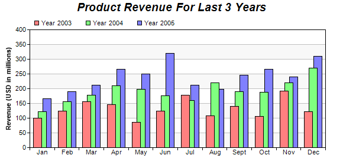

This example demonstrates a multi-bar chart in which the bars within a cluster overlaps.
The overlapping effect is configured using
BarLayer.setOverlapRatio. This method allows you to specify overlapping ratio and order. In this example, the overlapping ratio is 0.5, while the default overlapping order is used. The default order is that the first data set will stay on top of the second data set, and so on.
The following is the command line version of the code in "cppdemo/overlapbar". The MFC version of the code is in "mfcdemo/mfcdemo". The Qt Widgets version of the code is in "qtdemo/qtdemo". The QML/Qt Quick version of the code is in "qmldemo/qmldemo".
#include "chartdir.h"
int main(int argc, char *argv[])
{
// The data for the bar chart
double data0[] = {100, 125, 156, 147, 87, 124, 178, 109, 140, 106, 192, 122};
const int data0_size = (int)(sizeof(data0)/sizeof(*data0));
double data1[] = {122, 156, 179, 211, 198, 177, 160, 220, 190, 188, 220, 270};
const int data1_size = (int)(sizeof(data1)/sizeof(*data1));
double data2[] = {167, 190, 213, 267, 250, 320, 212, 199, 245, 267, 240, 310};
const int data2_size = (int)(sizeof(data2)/sizeof(*data2));
const char* labels[] = {"Jan", "Feb", "Mar", "Apr", "May", "Jun", "Jul", "Aug", "Sept", "Oct",
"Nov", "Dec"};
const int labels_size = (int)(sizeof(labels)/sizeof(*labels));
// Create a XYChart object of size 580 x 280 pixels
XYChart* c = new XYChart(580, 280);
// Add a title to the chart using 14pt Arial Bold Italic font
c->addTitle("Product Revenue For Last 3 Years", "Arial Bold Italic", 14);
// Set the plot area at (50, 50) and of size 500 x 200. Use two alternative background colors
// (f8f8f8 and ffffff)
c->setPlotArea(50, 50, 500, 200, 0xf8f8f8, 0xffffff);
// Add a legend box at (50, 25) using horizontal layout. Use 8pt Arial as font, with transparent
// background.
c->addLegend(50, 25, false, "Arial", 8)->setBackground(Chart::Transparent);
// Set the x axis labels
c->xAxis()->setLabels(StringArray(labels, labels_size));
// Draw the ticks between label positions (instead of at label positions)
c->xAxis()->setTickOffset(0.5);
// Add a multi-bar layer with 3 data sets
BarLayer* layer = c->addBarLayer(Chart::Side);
layer->addDataSet(DoubleArray(data0, data0_size), 0xff8080, "Year 2003");
layer->addDataSet(DoubleArray(data1, data1_size), 0x80ff80, "Year 2004");
layer->addDataSet(DoubleArray(data2, data2_size), 0x8080ff, "Year 2005");
// Set 50% overlap between bars
layer->setOverlapRatio(0.5);
// Add a title to the y-axis
c->yAxis()->setTitle("Revenue (USD in millions)");
// Output the chart
c->makeChart("overlapbar.png");
//free up resources
delete c;
return 0;
}
© 2023 Advanced Software Engineering Limited. All rights reserved.